A tactical field communication and navigation device designed around the ESP32 microcontroller.
FieldLink is a compact outdoor communication and navigation tool. The goal is to create a simple, reliable device that combines location tracking, short-range digital communication and an intuitive user interface. Some features are still under active development.
| Function | ESP32 GPIO |
|---|---|
| TFT SCK | 18 |
| TFT MOSI | 23 |
| TFT CS | 5 |
| TFT DC | 2 |
| TFT RST | 4 |
| Joystick X | 26 |
| Joystick Y | 27 |
| Joystick Button | 13 |
| GPS RX | 16 |
| GPS TX | 17 |
| Compass SDA | 21 |
| Compass SCL | 22 |
| nRF24 CE | 15 |
| nRF24 CSN | 14 |
| Battery ADC | 34 |
Photos and screenshots from the current FieldLink prototype.
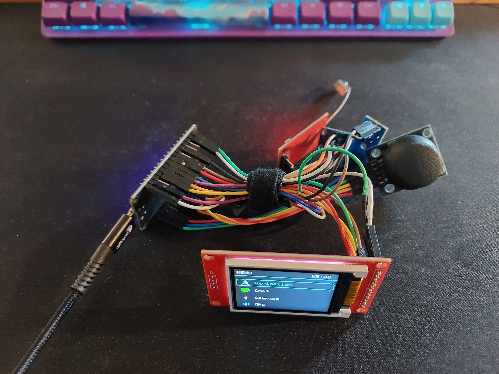
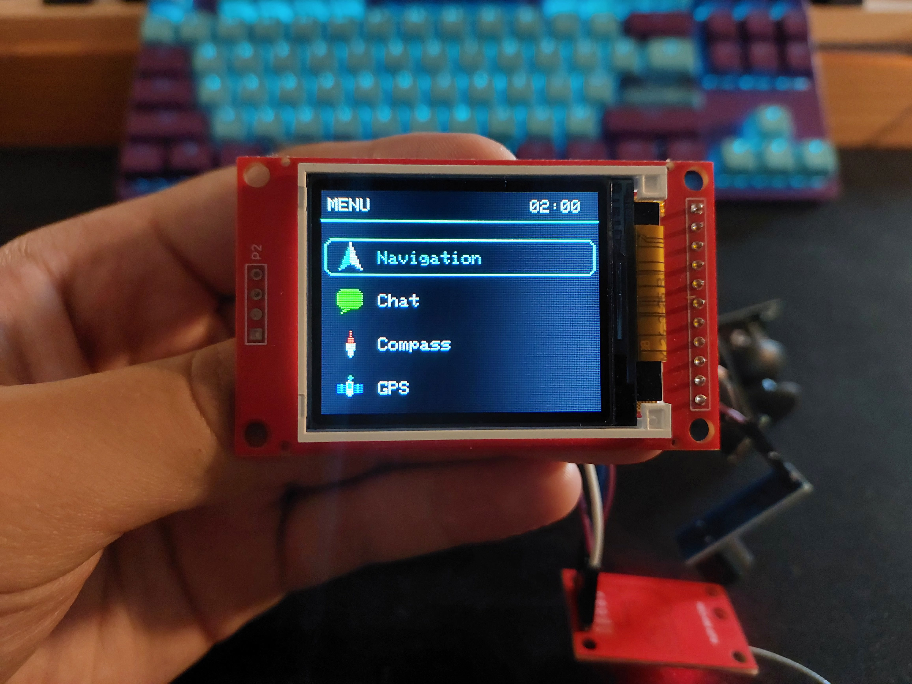
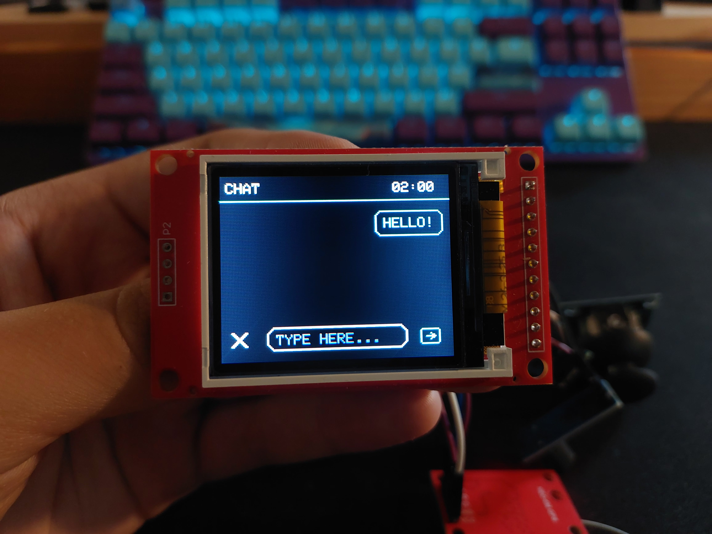
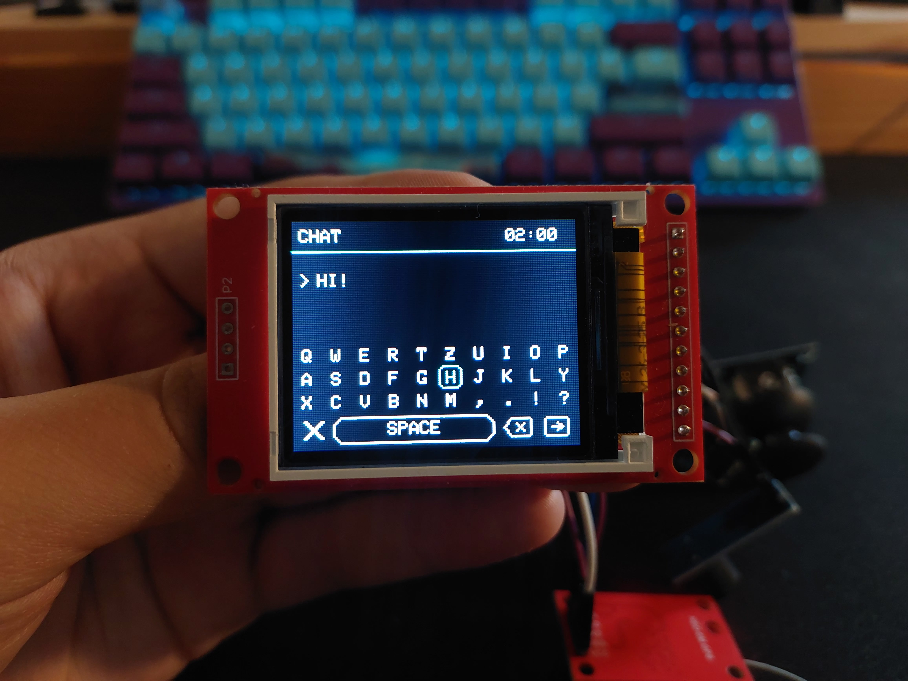
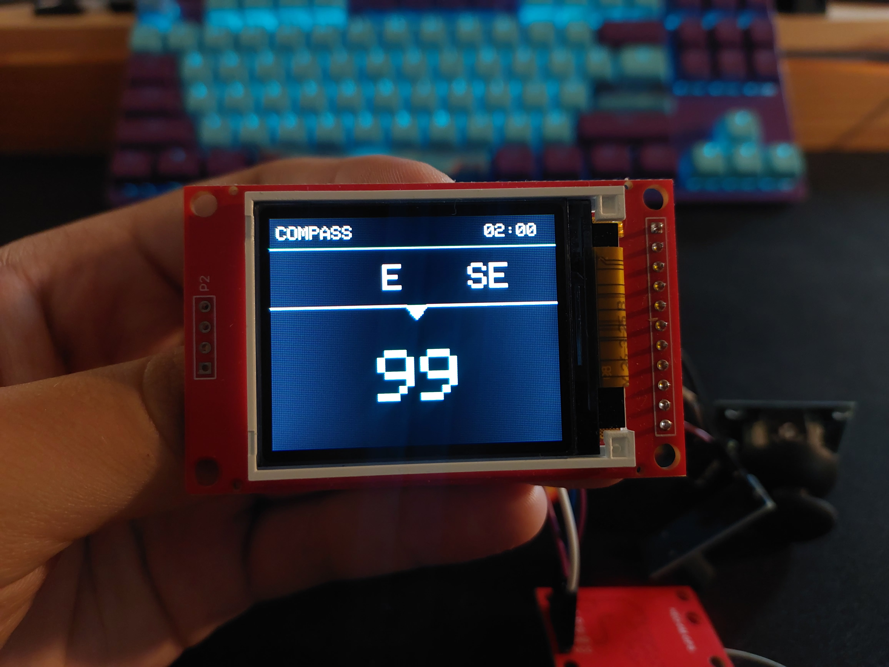
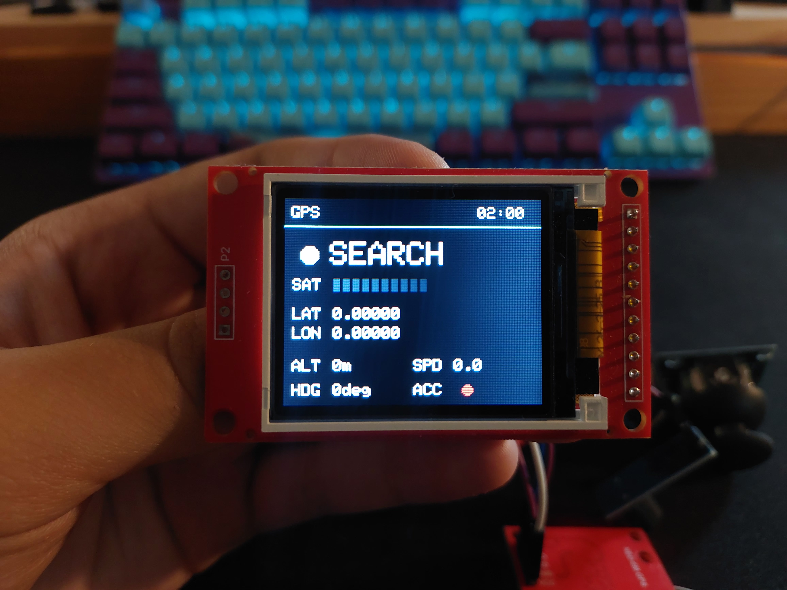
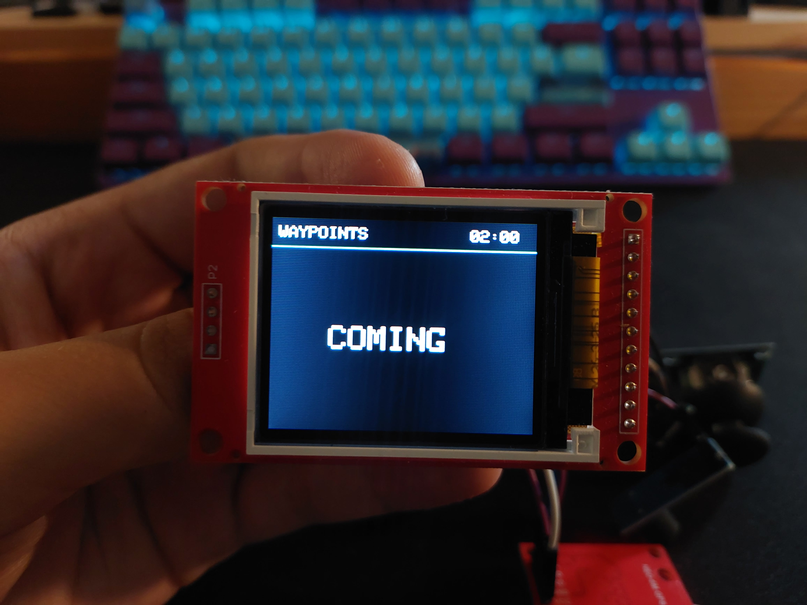
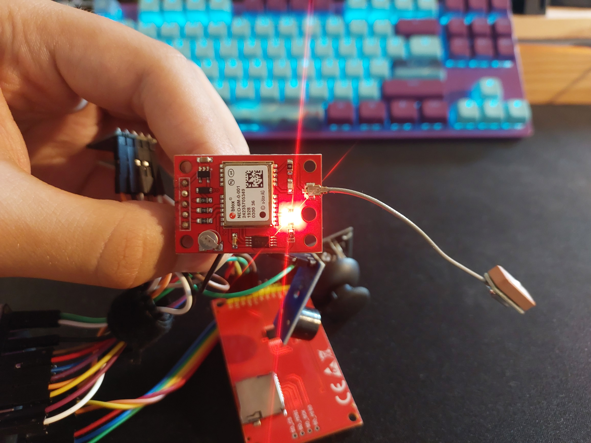
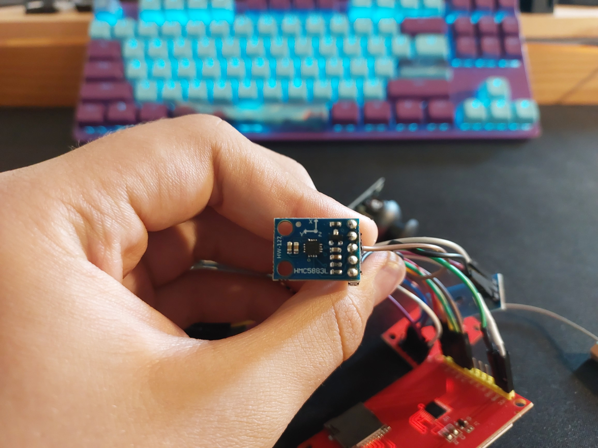
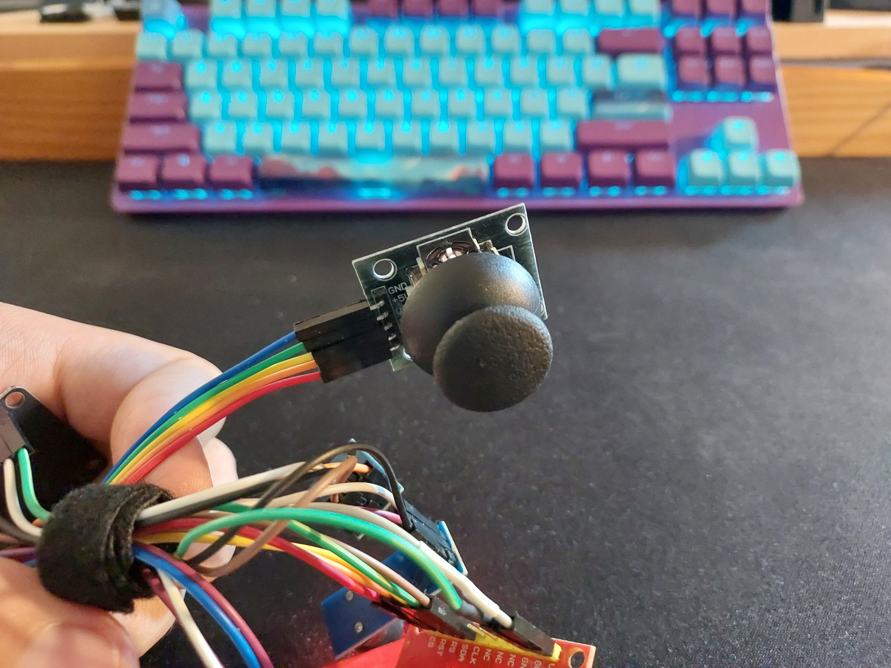
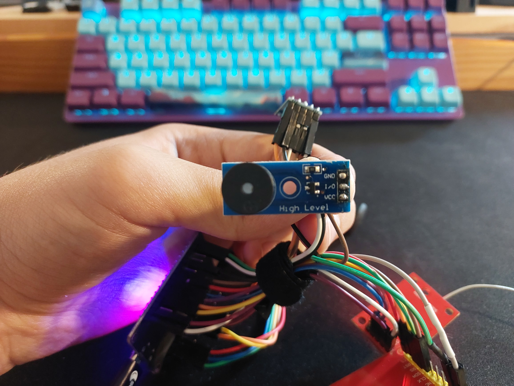
Demonstration of the FieldLink prototype.